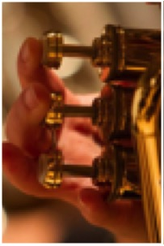

Canal Winchester Performing Arts Collective
A Community Of Life-Long Artists
Follow us on FaceBook - CW Performing Arts Collective
Autumn Harmonies 2024
Winchester Voices Choir Music
Beautiful City - www.youtube.com/watch?v=U5MMVNbh_fk
Every Valley - www.youtube.com/watch?v=4TlqeILbb68
Mary Did You Know - Full Score pdf
The Music's Always There With You - www.youtube.com/watch?v=unh-M3mNtcw
O Love - www.youtube.com/watch?v=jdym51_aMmA
The Prayer of Saint Francis - www.youtube.com/watch?v=5r-Yb5K9UJo
River and Sky - www.youtube.com/watch?v=oPEV8M9GDfk
Still Still Still - www.youtube.com/watch?v=VQcuVvpdgWc
When October Goes/Autumn Leaves - www.youtube.com/watch?v=yrx319K9jb8&t=5s
Winter is Calling - www.youtube.com/watch?v=V5lTroKRIuE